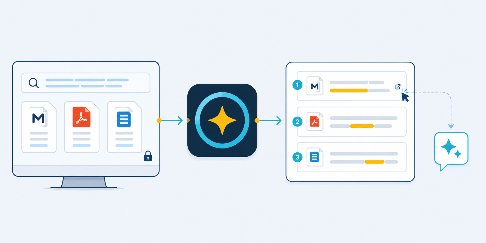

Hybrid retrieval
Exact FTS5 matches and LanceDB semantic candidates are fused, filtered, and optionally reranked.
Windows · Local-first · Read-only MCP
Search Markdown, PDF, and Tika-supported documents with hybrid lexical and semantic retrieval—without uploading your knowledge base.
The best match is grounded in the original note and keeps its source path.
BUILT FOR PRIVATE KNOWLEDGE
Caelune prepares precise, traceable context. You decide where that context goes next.
Exact FTS5 matches and LanceDB semantic candidates are fused, filtered, and optionally reranked.
File changes are collected and updated in batches. When nothing changes, the watcher stays light.
Inspect sources, select results, filter sensitive pages, and copy only the evidence you want.
PDF and Apache Tika-backed formats use isolated indexes and background tasks that do not block the interface.
Auto mode can use NVIDIA CUDA, recover safely, and explain when a stage falls back or needs attention.
Let compatible AI clients search the same local index through two focused, read-only tools.
FROM FOLDER TO RESULT
Keep your folders and writing habits. Caelune works around them.

Add a Markdown vault and optional PDF or Tika directories. Each workspace stays isolated.
Create lexical and semantic indexes locally, with visible progress and resumable work.
Search in the desktop app, copy selected context, or expose results through read-only MCP.
CLEAR PRIVACY BOUNDARY
Indexing and search run on your machine. Model and Runtime downloads occur only when you start installation. Context leaves only when you copy it or an MCP client requests a result.
READ-ONLY MCP BRIDGE
Caelune exposes status and search through a narrow stdio surface. It does not provide write, delete, or file-editing tools.
omniclip.statusready · hybridomniclip.search15 sourced resultsYour client receives selected evidence. Your archive remains local.
DESKTOP INTERFACE
Follow a question from transparent retrieval stages to source-linked results you can inspect before use.
Ask in natural language, follow each retrieval stage, and review the evidence before preparing context.
Select a result to inspect the matching passage and prepare only the context you want to use.
Swipe the cards to see more interface states.
Matched by semantic meaning and source structure.
Related context from a different source.
GET STARTED
Download the Windows build, choose a folder, install the local Runtime, and build your first index.